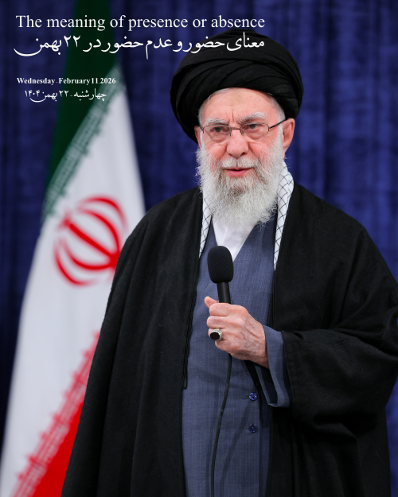

معنای حضور و عدم حضور در ۲۲ بهمن
تاریخ: ۲۲ بهمن ۱۴۰۴ شمسی (معادل ۱۱ فوریه ۲۰۲۶ میلادی)
امروز روز ۲۲ بهمن ۱۴۰۴ هست و دیروز هم رهبری انقلاب اسلامی دعوت کردند از مردم که در راهپیمایی شرکت کنند.
فکر میکنم فرصت خوبی هست که به صورت علنی به این دعوت پاسخ بدم وکمی صحبت کنم. البته مسائل متعدد زیادی، سالهای گذشته به صورت خصوصی از طریق نامه رسمی مطرح کردم به سایت رهبری ولی حتی به اندازه یک اپراتور تلفن همراه کسی رو برای پاسخگویی به مردم نذاشتن و پاسخی دریافت نشد و همین نشان دهنده ارزش مردم از نگاه ایشون هست و وجود مردم رو صرفا برای تقدیس و تکبیر و تعظیم لازم میدونن. قطعا یک اپراتور یا یک شرکت ساده برای یک درخواست یا یک شکایت بیشتر پیگیری میکنن و ارزش قائل هستند و حتی یک درخواست و یک شکایت رو فرصتی برای و تبلیغ و تبیین میبینن.
به دلیل اینکه من فرزند دو طلبهی وابسته به نظام حاکم هستم و خودم هم به صورت غیر ارادی و غیر مستقیم وابسته به این نظام هستم.هم از طرف خانواده و هم از طرف نظام، عدم حضور من در هر حرکتی که مشروعیت نظام رو تأیید کنه تفسیر غلط و تحریف میشه، و معمولاً شروع به شخصیت پردازی میکنن در ذهنشون و شخصیتی غیر واقعی از افراد خلق میکنن. از کسی که مهر تأیید مشروعیت این نظام رو نزنه. و دستور کار هم به این صورت هست که ابتدا محیط رو با کلام و زبان ناامن میکنن و بعد در این پوشش به صورت عملیاتی اقدام به ایجاد ناامنی میکنن. این متن و پاسخ به این دلیل هست که از اون شخصیت فرضی و خلق شده اونها، که مطرح میشه فاصله بگیرم.
آقای آیتالله خامنه ای و خانواده و چه دیگر کسانی که به این نظام رسما مشروعیت میدید و از من دعوت میکنید به مشروعیت دادن:
شما میگید که ما میتونیم ولایت فقیه و نظام اسلامی رو در حدی که قابل قبول باشه اجرا کنیم و تو به عنوان یک مسلمان شیعه و یک ایرانی این مسئولیت و مشروعیت رو به ما بده تا ساختار درست کنیم و مسئولیت تقسیم کنیم.
پاسخ ساده من: هر مسئولیتی نیاز به صلاحیت داره و شما درخواست بزرگترین مسئولیت رو دارید و از نظر من شما نمیتونید نمره قبولی بگیرید و من مسئولیت و حمایت و مشروعیت دادن به شما رو قبول نمیکنم. شما چیزی رو از من میخواید که توان و کمترین صلاحیتش رو ندارید وقطعا مردود میشید در اجراش، شاید در زبان یا روی کاغذ خیلی حماسی و زیبا مثل همین تصویر از رهبرانقلاب، و بدون عیب باشه که بخش بزرگیش مربوط به استفاده از مقدسات هست نه کارنامه ای که من به عنوان مشروعیت دهنده موظفم که نمره هم بدمهم.
پس عدم حضور من در راهپیماییها و انتخاباتها در سالهای اخیر به معنای عدم مشروعیت دادن و عدم صلاحیت و همچنین عدم حمایت از شما برای اجرای ولایت فقیه و حکومت و نظام اسلامی هست که نیازمند توانایی و صلاحیت هست که شما بسیار ازش فاصله دارید. به علاوه، نکته مهم و قابل توجه اینه که این فاصله بسیار زیاد و عدم توانیی اجرای درست و قابل قبول، هم برای مردم ایران و هم برای مردم دنیا مشکلات بزرگ و عمیق و حساس امنیتی ایجاد کرده و خواهد کرد. و من وظیفم میدونم مشروعیت دادن رو متوقف کنم و همراهی نکنم. البته بعد از امتیازها و حمایت های زیادی که دریافت کردید از ما و در انجام وظایف قانونی بسیار کوتاهی کردید.
و من به شخصه اگر مشروعیت رو تأیید کنم و همراهی کنم هیچ پاسخی در برابر مردم ایران و حتی مردم دنیا و از همه اینها مهمتر، خداوند قادر و توانا نخواهم داشت. و وای بر روزی که مخلوقی کوچک در برابر خالقی بزرگ بی پاسخ و ذلیل باشه